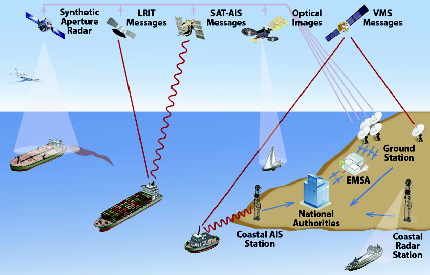
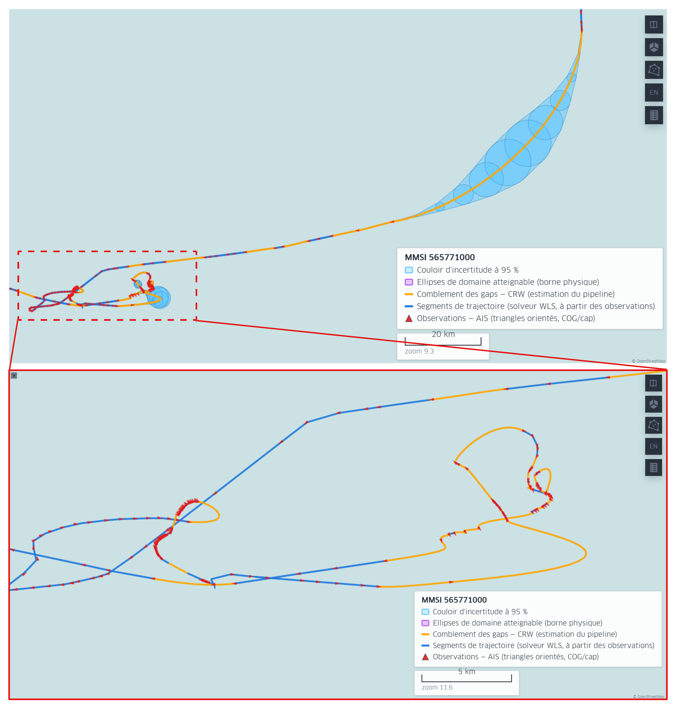
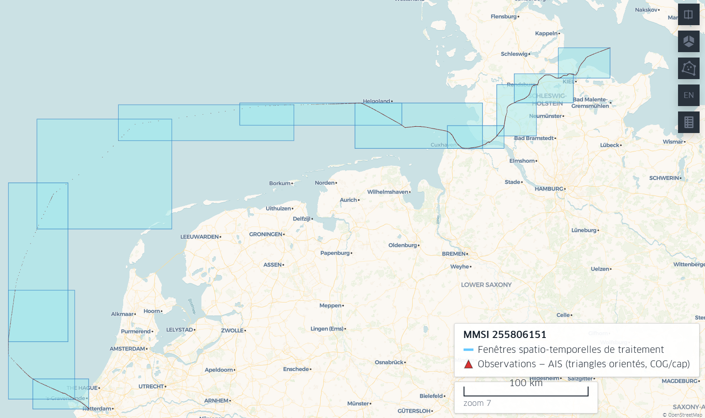
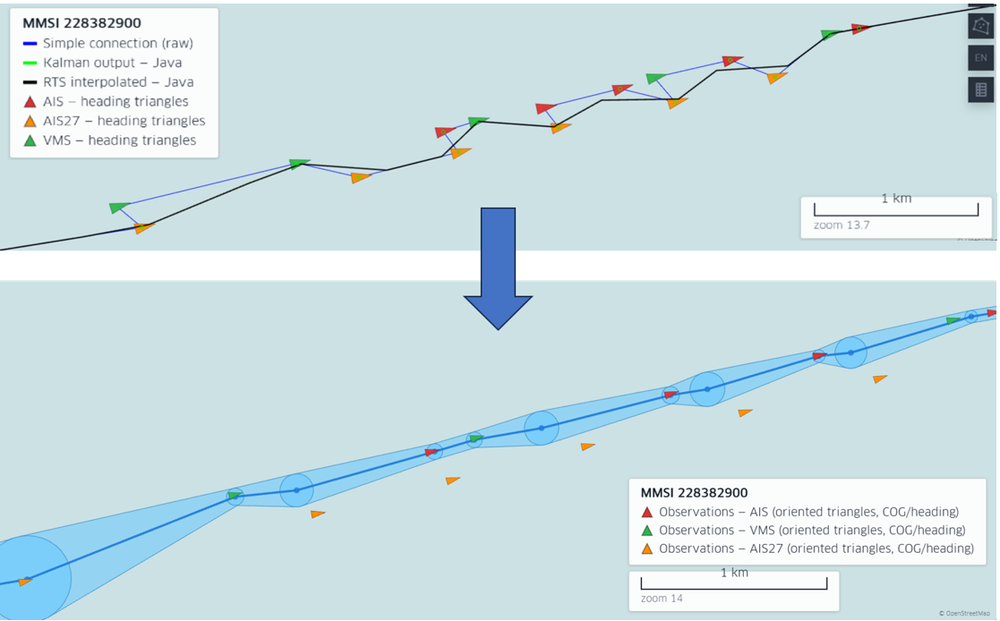
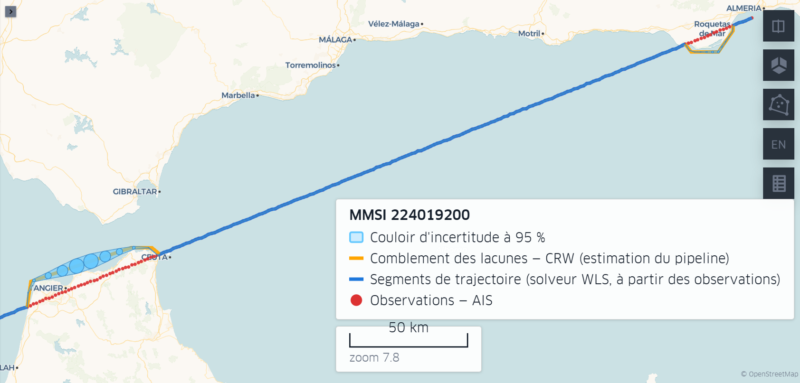
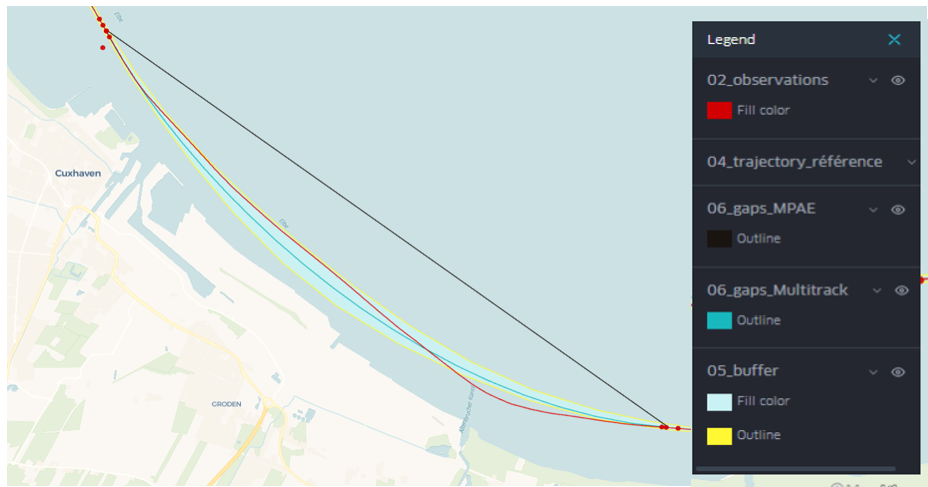
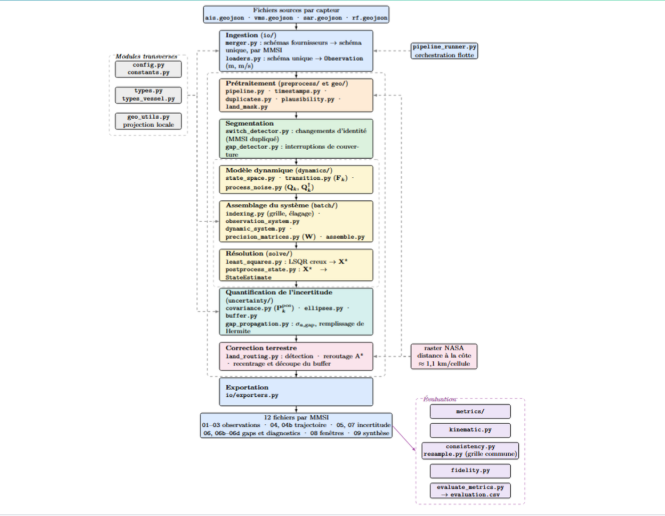

CLS Group
Signal & Data Processing Engineer
Multi-Source Trajectory Reconstruction
Trajectory reconstruction and state estimation for maritime surveillance, fusing heterogeneous satellite and positioning data.
- Combined SAR imagery, optical observations, and vessel positioning data (AIS, LRIT, VMS) into a unified pipeline.
- Built Python pipelines for large-scale numerical and geospatial data processing.
- Defined performance and robustness evaluation protocols in an operational R&D environment.